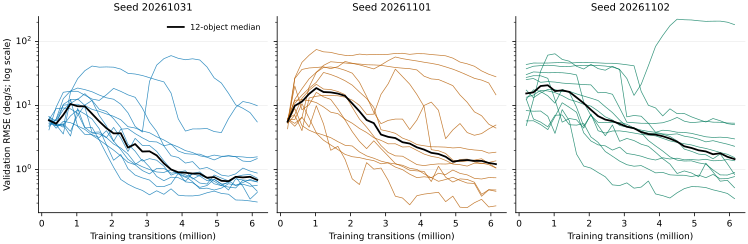
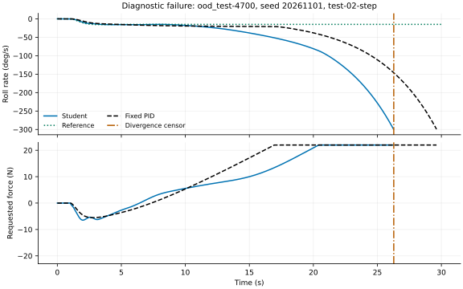
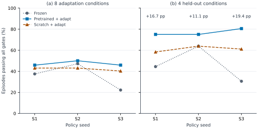

基于飞行品质模型的飞控控制器构建：特权教师与多轮蒸馏
摘要
面对响应速度、振荡特性、控制效能和时延不同的被控对象，如何学习一个使用统一观测接口的轻量飞控控制器？本文研究基于飞行品质模型的控制器构建路线：以品质相关动力学描述构造训练对象族，以特权强化学习分别获得各对象的专用教师，再通过多轮学生闭环采样与教师标注，将多对象控制能力集中到统一学生中。教师利用仿真中的真实参数和内部状态学习控制，学生根据普通观测及其历史输出控制动作。该设计旨在连接多样对象上的控制学习与统一控制器的部署，并在遇到新目标时保留适配能力。
本文以滚转通道检验这条路线，评价指令跟踪、指令响应及初始偏差和扰动后的恢复。在训练前冻结的 12 个源对象、24 个同分布留出对象、24 个分布外对象及三个策略种子上，完成了 36 个教师和三个 3,856 参数学生的训练与独立闭环评价。相对单个教师 Actor，学生参数量约缩小 1,104 倍；学生在同分布、分布外留出对象上的项目门限通过率分别为 40.7%–68.1%、38.9%–51.4%。多轮蒸馏相对初始行为克隆降低了验证误差，但存在能力损失、种子差异和恢复失败。在 DHC-6 辨识仿真上的适配进一步提供了正向对照。结果表明，所述链路能够形成跨对象运行的统一控制器，同时仍需提高能力保留、对象覆盖和闭环可靠性；当前滚转结果不构成完整飞机飞行品质保证。
关键词： 飞控控制器；飞行品质模型；特权强化学习；多教师；多轮蒸馏；跨对象控制
1 引言
飞控控制器需要在对象动态和工况变化时完成指令跟踪，并控制响应中的振荡及扰动后的恢复。针对一个对象训练成功的策略，在另一个响应更慢、阻尼更低或时延更大的对象上可能需要不同动作。本文关注的核心问题是：能否面向具有不同飞行品质相关动态的对象族，学习一个轻量、使用统一接口的飞控控制器？ “品模”路线的最终产物是这个控制器；对象模型为控制器学习提供环境，飞行品质相关描述为环境中的差异提供依据。
实现这一目标需要同时处理三个问题。首先，训练对象必须覆盖有控制意义的动态差异，否则共享策略可能只适用于狭窄对象范围。其次，训练环境中的真实参数和内部状态，在实际控制时通常无法直接获得。最后，学生的动作误差会改变后续访问状态，只在教师轨迹上拟合动作，未必能维持闭环表现。这三个问题分别指向对象族的组织、训练与部署的信息分工，以及闭环状态上的蒸馏。
本文据此采用“品质相关对象族—特权教师—统一学生”的构建方式。对象族按响应速度、振荡衰减、发散趋势和时延等特征提供多样训练环境；各教师在对象明确、内部信息可用的条件下学习控制；学生通过多教师监督和多轮闭环采样，将这些行为归纳到一个网络中。部署时，学生利用当前观测和输入输出历史作决策，无需在网络输入中显式给定真实对象参数。历史是否足以支持这种判断，以及蒸馏是否保留控制能力，均由闭环实验检验。
这条设计值得研究的原因，是它把学习多样控制行为的离线过程，与运行一个小型反馈策略的部署过程连接起来。它追求三个结果：在不同对象上获得控制能力，将能力集中到统一轻量模型，并在未见对象上保持可接受的跟踪与恢复。目标适配是面对剩余差异时的后续环节。每一步都可能损失能力，因此评价必须沿教师、学生和未见对象连续展开；参数规模、动作拟合误差和目标适配收益不能互相替代。
现阶段采用滚转角速度通道验证路线可行性。该任务同时包含振荡模态、时延和输入限制，能够观察控制学习与能力传递中的问题。当前滚转验证以抑制振荡、保留指令跟踪为重点，既评价指令引起的响应，也评价初始偏差和外部扰动后的恢复。滚转是这条飞控构建路线的验证载体；当前结果的适用范围为参数化滚转对象和 DHC-6 辨识仿真。
本文建立了从品质相关对象族、专用教师到统一学生的一致控制接口，在对象与指令隔离、三个独立策略种子的协议下检验教师控制、多轮蒸馏和未见对象闭环表现，并以目标适配作延伸验证。PPO、特权学习和 DAgger 均采用已有方法；研究问题在于这些环节能否共同形成所需控制器，以及能力在哪一步受限。
2 相关工作与研究位置
2.1 飞行品质为训练对象提供什么
GJB 2874—1997 的飞行品质条款及低阶等效系统描述，为理解滚转响应和相关模态提供依据[1]。Davidson 与 Andrisani 讨论了传递函数、模态与响应之间的关系[2]；Morelli 的 LOES 辨识以驾驶操纵和飞机响应为输入输出，描述中可以包含机体与控制系统的共同作用[3]。这些工作提示：对象族应同时说明极点、零点、控制接口和评价条件，单个阻尼值不能完整决定可见响应。
强化学习与航空品质评价已有直接联系。例如，Jansen 与 van Kampen 研究 SAC 飞控的纵向操纵品质评价[4]；Bøhn 等研究固定翼姿态控制的仿真到实飞迁移[5]。本文将品质相关描述放在源对象组织环节，尝试为跨对象学习提供可解释的变化维度。标准中的边界并不自动给出真实机队的采样分布，也不使训练奖励自动成为完整品质评价。
2.2 特权学习、历史适应与小型通用策略
LUPI 与广义蒸馏区分训练时可用的信息和部署时可用的信息[6,7]。Asymmetric actor–critic 将更完整的信息供给 Critic，而 Actor 使用部署观测[8]；本文还让专用教师 Actor 读取对象参数和内部状态，再向无显式特权输入的学生传递动作监督。因此，本文同时涉及信息条件变化与模型压缩。
RMA 和 Extreme Adaptation 利用历史信号形成对动力学的适应[9,10]。与本文链路最接近的 RAPTOR，为 1,000 个四旋翼对象分别训练教师，再蒸馏为 2,084 参数的循环学生，并在多个真实四旋翼上验证[11]。已有工作已经表明，多教师、小型统一策略和跨平台适应可以构成完整路线。本文将这一类问题放到品质相关的滚转对象族上，关注教师控制能力向普通观测学生的传递，以及在跟踪和恢复任务中的跨对象表现。多教师蒸馏本身不被当作首次提出的方法。
2.3 为什么需要学生闭环采样
Policy Distillation 将多个策略的行为转移到统一策略[12]。若监督数据只来自教师轨迹，学生执行误差可能使它访问训练集中较少出现的状态。DAgger 在学习策略访问的状态上追加专家标注，直接处理这种分布变化[13]；Distilling Policy Distillation 进一步讨论了采样分布与蒸馏目标的关系[14]。本文的“多轮”是多次闭环采样、标注和聚合，并非同一数据上的重复训练，也不是将上一代学生升级为下一代教师。Born Again Networks 与 Teacher Assistant KD 对应后两类蒸馏设计中的不同问题[15,16]，不构成本文迭代收益的证据。
表 1 将整条路线中的设计选择与验证问题对应起来。各组件的作用动机与已有实验结果分别列出，避免把链路能够运行直接解释为每个组件都已得到独立验证。
| 设计选择 | 希望解决的问题 | 本文能提供的证据 |
|---|---|---|
| 品质相关对象族 | 使源域变化对应明确的控制困难 | 对象定义和覆盖核查；尚无相同预算随机采样对照 |
| 特权专用教师 | 在仿真中先学习各对象的控制行为 | 三种子的教师闭环结果；尚无同容量无特权消融 |
| 统一历史观测学生 | 用一个小型控制器承接多个教师 | 参数规模、同对象配对和未见对象测试 |
| 学生采样与重新标注 | 补充学生自身容易访问的状态 | 全部迭代验证曲线；尚无等计算量继续 BC 对照 |
| 预训练后目标适配 | 复用源域经验改善有限预算结果 | 三种子的同网络、同目标数据与更新预算对照 |
3 方法：从品质相关对象族构建统一飞控控制器
3.1 控制任务与整条路线
记对象参数为 ，控制器权重为 。 决定输入如何引起对象响应， 决定控制器根据观测采取什么动作。训练时固定或选择 、更新 ；部署时由当前观测和历史计算动作。图 1 展示从对象构造、特权教师到统一学生的过程，以及学生在未见对象上的闭环验证。需要针对新目标更新时，再进入适配环节。
可用真实参数与内部状态产生对象对应的控制经验
3,856 个参数多轮学生采样 ↔ 教师标注
初始偏差及扰动恢复需要时再做新目标适配
滚转任务的输入为速率指令 ，输出为实际滚转角速度 。公共二阶参考模型生成 ；其参数对所有对象一致，并且不读取真实对象参数：
控制周期为 20 ms。策略输出归一化力速率动作 ，更新请求力；请求力经过幅值、速率、执行机构和对象时延后作用于对象。这个接口把不同策略放在同一输入能力下比较。控制目标包括参考跟踪、指令响应中的振荡，以及初始偏差和扰动释放后的恢复。
3.2 以响应特征组织源对象
源域采用以下参数化滚转对象：
参数向量 包含 、、、、、、、，且 、。 描述滚转模态时间尺度， 描述螺旋模态趋势，、 描述振荡模态， 和分子零点影响操纵效能及各模态在输出中的表现， 为纯传输时延。有理部分转换为四维状态空间，以 1 ms 步长离散推进，时延由队列实现。实现状态 并不直接等于真实飞机的 、、、。
这样的组织方式把“改变对象”转化为改变可解释的响应特征。例如，降低振荡模态的衰减率会增加恢复挑战，增加时延会改变反馈动作产生效果的时刻。教师在这些不同对象上学习，学生尝试从输入输出历史中适应差异。品质参数在这里提供训练空间的描述语言；其覆盖是否充分、是否比其他采样方式更有效，需要分别评价。
本实验从已有 5,000 对象库中预先选择 12 个源对象，部分品质 L1/L2/L3 各 4 个，同时冻结 24 个 ID 与 24 个 OOD 对象。部分标签来自选定的滚转时间常数、螺旋、荷兰滚和一秒灵敏度判据，不能解释为整机 GJB 等级。源对象没有因教师表现不佳而被删除。对象库仍存在联合退化覆盖不足，具体限制及尚未训练的新构造样例列于附录 B。
式 (2) 的操纵力—速率映射，与接入策略后的指令—闭环速率映射不同。当前等效 N 输入和附加执行机构是明确的研究接口。若后续使用已经包含原控制系统的辨识对象，必须重新核对控制边界，防止重复加入执行机构或原飞控效应。
3.3 特权教师：在对象明确时学习控制
专用教师把“给定对象上如何控制”与“仅凭部署观测如何应对对象差异”分为两个学习阶段。这里选择强化学习，是为了在相同指令、输入约束和累计代价下，通过闭环交互为各对象产生控制监督，而无需先为每个对象指定一套教师控制律。这是训练设计的动机；它不要求 PPO 必须优于其他控制设计，经典控制器作为教师也是后续可比较的选择。
每个源对象独立训练一个 PPO 教师。普通观测包含当前 9 项量、过去 32 步的 5 通道历史和 7 步动作，共 176 维；历史长度为 0.64 。教师 Actor 额外读取 8 个对象参数和 4 个内部状态，Critic 还可使用时延队列及任务进度。单个教师的 固定，训练更新的是其网络权重。
历史通道为 、、、、。速度量以 30 归一化，力以 22 N 归一化，误差积分以 30 deg 归一化，角加速度尺度为 5 。学生前向不读取 或 ； 和导数量在实机上如何测量或估计，仍需平台接口验证。
教师从高斯策略采样原始动作 ，环境将其裁剪为 后执行。PPO 的新旧概率比始终在同一原始样本 上计算。请求力与实际奖励为：
1.76 N 来自 88 的速率上限乘以 20 ms 控制周期；执行机构为时间常数 20 ms 的一阶环节。奖励使用动作执行后同一时刻的参考和输出，即 ；下一个观测也对齐到该时刻。三项分别惩罚跟踪误差、施加力和力速率动作，权重体现当前配方的折中。它并未直接约束全部模态品质或长时稳定性，因此恢复任务另作测试。
教师最大化有限 8 任务内的折扣回报，使用 PPO 和 GAE[17,18]。Critic 估计未来回报，GAE 将一步预测残差组合为优势；PPO 限制每次更新对既有样本动作概率的改变。精确目标、终止语义和超参数见附录 A。特权量为教师提供更多仿真信息，但本实验未隔离其相对无特权训练的因果收益。
3.4 迭代蒸馏：从教师轨迹走向学生轨迹
初始行为克隆（BC）使用教师访问的状态及动作标签。学生随后在各源对象上闭环运行，由该对象的教师为访问状态标注动作。设第 轮采集到的普通与特权观测为 、，教师确定性动作标签为 ；保留全部历史样本后最小化动作平方误差：
表示第 轮行为策略诱导的状态分布；前两轮以一定概率执行教师动作，之后完全执行学生动作。优化用有限轮 Adam 近似式 (5)。这一过程使教师能够在学生偏离原教师轨迹后继续提供纠正信号，目标是减少监督分布与学生使用分布之间的差距。
BC 训练 30 个 epoch，随后实际采集 6 轮，每轮在累计数据上训练 8 个 epoch。教师行为概率依次为 0.5、0.25、0、0、0、0；每批新增 153,600 个状态，含初始 BC 数据后每种子共 1,075,200 个状态。统一学生只有 3,856 个参数；按源对象验证指令的平均 RMSE 选择轮次，不使用测试成绩选模。
迭代的作用受信息条件约束。如果两个对象在学生可见历史上无法区分，却需要不同控制动作，更多教师标签仍可能相互冲突。历史长度、网络容量和教师质量共同影响学生表现；增加蒸馏轮数本身不提供单调改进或闭环稳定性保证。
3.5 面向新目标的适配环节
目标域采用 DHC-6 仿真记录辨识的 ARX 模型。8 个适配工况各提供 30 PRBS 记录，共 240 ，用于辨识；另外 4 个工况留出。两个可训练组使用相同的 3,856 参数网络、目标模型、指令、优化器、工况顺序与 64 次更新，区别是从源域学生权重还是随机权重开始。冻结学生作为不更新的参照。
式 (6) 的误差、施加力和动作由辨识模型闭环生成，沿用源域三项代价，但在目标适配中使用未折扣的均值。目标损失覆盖完整 8 可微轨迹；每个工况更新 8 次，梯度范数上限为 1，固定第 64 次更新后的模型进行评价。每个可训练组经历 819,200 次模型内状态转移。这是基于辨识模型的梯度适配；“相同预算”指目标数据和目标更新预算相等，预训练组另外承担源域离线学习成本。
目标接口沿用源域的观测结构、增量力动作和输入限制。施加力按 −10/22 deg/N 映射为副翼偏角；ARX 以实际副翼量辨识，模型内不重复加入执行机构。目标误差积分采用 50 Hz 梯形近似，源域采用 1 kHz 区间积分。评价采用独立记录辨识的模型，留出工况不用于策略更新。
4 实验设计
实验沿控制器构建路线依次回答：教师是否学会控制各源对象；统一学生能否保留教师能力、多轮蒸馏怎样改变表现；学生在未见对象上能否跟踪和恢复；进一步适配能否改善新目标表现。全部主要结果来自训练前冻结的 controller-route-v1 协议，三个策略种子为 20261031、20261101、20261102，以下简写为 S1、S2、S3。协议、逐轮记录及汇总数据均随文提供。
表 2 训练与评价协议。
| 项目 | 固定设置及评价单元 |
|---|---|
| 源对象 | 12 个；每种子各训练 12 个教师；全部保留 |
| 未见源域对象 | ID 24 个、OOD 24 个；与训练、验证对象隔离 |
| 指令 | 32 条训练、16 条验证、18 条测试波形；按实际波形检查隔离 |
| 教师 | 每个 30 次采集 × 512 个并行环境 × 400 步，共 6,144,000 次转移 |
| 源域训练扰动 | 初始输出标准差 2 ；输入扰动标准差 0.5 N、持续 0.2 |
| 学生 | 每种子一个；初始 BC 与六轮闭环数据聚合；验证选模 |
| 8 指令测试 | 源域 12×18=216 案例；ID/OOD 各 24×18=432 案例 |
| 延长与恢复测试 | 30 的 ±15 阶跃；初始 ±5 ；2.0–2.3 的 ±1 N 脉冲 |
| 目标适配 | 8 个工况，240 辨识记录；64 次完整轨迹梯度更新 |
| 目标测试 | 8 个适配工况与 4 个留出工况分列；每工况 18 条独立测试指令 |
教师与学生的控制指标均在同一物理接口下计算。对于每条指令，以参考跟踪 RMSE、峰值误差和请求力总变差率构成项目联合通过条件：
这些门限是项目评价规则，不是完整 GJB 品质等级。正式测试从指令起始响应覆盖到任务末状态；教师选模的验证窗口为 2.00–7.98 ，学生选模使用完整响应，这一差异保留并在解释中考虑。非有限输出或 记为发散失败并截尾，截尾后不补零。通过率始终包含全部预定案例。
恢复评价将有控响应与施加相同初始偏差或输入脉冲的无控响应配对，测量释放后 RMS，并记录稳定时间是否在观察期内得到确认。RMS 同时包含偏差、漂移和振荡，不能直接等同模态阻尼。固定抗饱和 PID 在源对象验证指令上选参，最终 ，作为常规控制参照。
目标评价模型使用与策略拟合分离的 chirp 记录辨识，并用另外两类记录检验；24 次外部记录预测检验均满足预设 VAF≥85%。这支持当前辨识范围内的模型评价，不能代替在原始完整仿真器或实机上的闭环检验。三种子逐一报告；同一对象上的多条指令不被当作独立飞机样本。
5 结果
5.1 专用教师提供了控制监督，但质量存在差异
36 个教师作业全部完成，总计 221,184,000 次源域状态转移；全部预定对象和种子进入评价。独立 8 指令测试中，三个种子的教师分别通过 178/216（82.4%）、132/216（61.1%）、132/216（61.1%）个对象—指令案例。要求同一对象的全部 18 条指令均通过时，分别为 8/12、4/12、4/12。教师已经在部分对象上学到有效控制，但不同种子的监督质量并不一致。

图 2 教师在各源对象上的验证学习曲线。横轴为状态转移数，纵轴为验证 RMSE，采用以 10 为底的对数刻度；全部正误差保留。细线为各对象，黑线为 12 个对象的中位数，不是置信区间。验证窗口为 2.00–7.98 ，正式测试另用完整响应。
这一结果是蒸馏的起点：学生接收的是有能力差异的教师集合。评价学生时既要检查压缩与信息变化造成的损失，也要保留教师本身未学好的案例。全部教师均参与后续蒸馏，没有按测试效果挑选教师。
5.2 小型学生承接了多对象控制，但存在能力损失
每个教师 Actor 为 4,255,537 参数；统一学生为 3,856 参数，相对单教师约缩小 1,104 倍。这个数字描述参数规模，尚不是处理器上的推理时延或控制周期测量。
表 3 同对象、同指令的教师与学生对照。
| 种子 | 教师源对象通过率 | 学生源对象通过率 | 学生−教师 | 学生/教师 RMSE 中位倍数 |
|---|---|---|---|---|
| S1 | 178/216（82.4%） | 188/216（87.0%） | +4.63 pp | 1.140 |
| S2 | 132/216（61.1%） | 138/216（63.9%） | +2.78 pp | 1.027 |
| S3 | 132/216（61.1%） | 104/216（48.1%） | −12.96 pp | 1.324 |
通过率按全部 216 个相同对象—指令配对统计。RMSE 比值仅在教师 RMSE≥0.05 且双方有限时计算，每种子 214 对，以避免接近零的分母主导比值。三个种子的学生整体平均 RMSE 均下降，但逐案例 RMSE 比值的中位数均大于 1；两种统计描述不同。尤其 S3 有 18 个案例从不通过变为通过、46 个反向变化，显示平均误差改善可以伴随通过率下降。
要求一个对象的全部 18 条指令都通过时，教师分别为 8/12、4/12、4/12，学生为 6/12、0/12、0/12。因此，结果支持“小型统一学生可承接多个对象的部分控制能力”，同时表明能力保留尚不稳定。教师本身的种子差异和未通过案例也限制了可蒸馏的监督质量。
5.3 多轮闭环采样改善验证误差，收益不随轮数单调增加
图 3 展示初始 BC 和全部六轮重新采样后的源对象验证误差。最优轮次分别是第 6、5、4 轮；相应平均 RMSE 从 4.668、6.895、10.908 降至 0.960、1.380、2.088 。S2 和 S3 的最后一轮都不是最佳轮次，S3 在中间轮次也发生反弹。

图 3 逐轮源验证 RMSE，单位 ，线性纵轴。每轮均执行新的闭环采样，所有历史样本累计训练；空心大圈标出只按验证集选出的模型。曲线是三个实际训练种子，不表示总体置信区间。逐轮数据。
这些记录说明迭代链路能够运行，并观察到相对初始 BC 的改善。由于新增数据量和优化次数同时增加，目前不能把全部改善归因于学生采样本身；等计算量继续 BC 是区分机制所需的对照。现有结果也支持按预定验证规则停止，而不是默认使用最后一轮。
5.4 未见对象暴露了泛化与恢复的边界
冻结学生在所有未见源域对象上使用相同网络权重及普通观测接口，结果如下。
表 4 未见对象上的冻结控制器表现。
| 策略 | ID：24 对象×18 指令 | OOD：24 对象×18 指令 |
|---|---|---|
| 学生 S1 | 294/432（68.1%） | 222/432（51.4%） |
| 学生 S2 | 228/432（52.8%） | 176/432（40.7%） |
| 学生 S3 | 176/432（40.7%） | 168/432（38.9%） |
| 固定抗饱和 PID | 232/432（53.7%） | 120/432（27.8%） |
学生的 OOD 通过率均高于这一固定 PID，ID 则只有 S1 更高。PID 来自有限验证网格，不能据此推断学生优于最优 PID、鲁棒控制或增益调度。按对象要求全部 18 指令通过，学生 ID 为 6/24、0/24、0/24，OOD 为 5/24、0/24、0/24；这一更严格视角显示出零样本部署的可靠性缺口。
恢复测试给出独立于指令跟踪的证据。30 输入脉冲释放后，与相同扰动的无控响应相比，三个学生在 OOD 上的 RMS 降低/升高案例数分别为 26/22、22/26、12/36，分母均为 48；S3 有 36 个案例反而变差。初始偏差测试中，S3 的 OOD 双方有限 44 对里有 34 对 RMS 升高，另外 4 个无控发散案例单列。这说明当前训练尚未实现一致的恢复收益。
30 恒定速率测试出现 6 次学生发散，均来自 ood_test-4700 的正负阶跃、覆盖全部三个种子。图 4 保留最早失败的轨迹；其他失败和全部恢复配对见补充数据。

图 4 30 测试中的失败案例。仅展示最早发散轨迹用于诊断，全部六次学生发散均保留在统计中；完整清单见汇总数据。
式 (2) 在 时有 。长期精确跟踪非零恒定速率，所需力可渐近为斜坡；对该失败对象，放宽执行机构和时延约束后的精确逆输入约在 18.01 超过 22 N，30 时达到约 44.17 N。这揭示任务设计与有限输入能力之间的冲突，但没有证明允许非零误差的项目门限一定不可满足，也不能解释全部恢复退化。该事后诊断未用于删除案例或修改已报告结果。
5.5 新目标适配作为控制器使用的延伸
在教师、蒸馏与未见对象测试之后，目标适配进一步检查统一学生如何用于新的辨识对象。表 5 比较三个种子在相同目标预算下的结果。三个种子中，预训练后适配在留出工况上均优于同预算从零训练，通过率提高 11.1–19.4 个百分点，同时均优于冻结学生。收益出现在没有参与策略更新的工况，支持源域权重可作为当前目标适配的有用起点。
| 种子 | 工况组 | 冻结学生 | 预训练后适配 | 同预算从零 | 适配相对从零 |
|---|---|---|---|---|---|
| S1 | 8 个适配工况 | 54/144（37.5%） | 66/144（45.8%） | 62/144（43.1%） | +2.8 pp |
| S2 | 8 个适配工况 | 68/144（47.2%） | 72/144（50.0%） | 62/144（43.1%） | +6.9 pp |
| S3 | 8 个适配工况 | 32/144（22.2%） | 66/144（45.8%） | 58/144（40.3%） | +5.6 pp |
| S1 | 4 个留出工况 | 32/72（44.4%） | 54/72（75.0%） | 42/72（58.3%） | +16.7 pp |
| S2 | 4 个留出工况 | 46/72（63.9%） | 54/72（75.0%） | 46/72（63.9%） | +11.1 pp |
| S3 | 4 个留出工况 | 22/72（30.6%） | 58/72（80.6%） | 44/72（61.1%） | +19.4 pp |

图 5 相同目标预算下的闭环通过率。两面板分别为适配工况与留出工况；横坐标为三个策略种子，纵轴为通过率，所有比例保留完整分母。点和线型区分三种初始化/更新方式，连线只帮助比较种子，不表示连续趋势；不将多条指令当作独立重复计算误差条。绘图数据。
这些结果回答的是“固定目标预算下，源域经验是否有帮助”。本实验只测试一个目标数据量和一个更新预算，尚不能给出达到同等性能所节省的数据量、更新次数或总计算量。留出组通过率高于适配组也不意味着未见工况天然更容易适应；两组工况不同，不能把它们之间的差值作为适配收益。
6 讨论：当前价值与尚缺的证据
6.1 沿构建链路判断控制器能力
本研究的主体是统一飞控控制器的构建。对象族决定教师见过哪些动态，教师决定学生能得到什么监督，蒸馏决定监督能否转化为普通观测下的控制，未见对象测试则检验这一能力是否超出源对象。当前实验把这些环节连接起来，并形成一个可在不同对象上运行的 3,856 参数学生。
链路可运行与控制器可靠是两个需要分别检验的结果。教师通过率存在种子差异，学生在一个种子中有明显能力损失，未见对象上的全指令通过率和恢复收益仍不足。多轮蒸馏的验证改善、参数压缩和目标适配正结果，为不同环节提供证据，但不能补齐未通过的闭环要求。后续改进应定位能力在哪一环节丢失，再用相同任务和指标比较。
6.2 区分整条路线与各组件的作用
品质相关参数使对象差异与控制问题建立联系，特权教师为各对象学习提供仿真信息，迭代蒸馏针对学生访问状态补充监督。这些选择共同服务于统一控制器的形成。现阶段的结果支持对整条路线继续研究，各组件是否必要、哪种选择更有效，还需要独立对照。
对象库的多项退化组合覆盖不足，会限制学生接触的控制情形。新构造的 190 对象样例改善了显式组合与边界覆盖，但尚未训练，不能用于解释已有性能。采样方式对照应固定教师数、对象范围和训练预算；特权信息、学生容量、历史长度和蒸馏数据分布也应分别控制。它们是完善路线解释的实验，不能只凭其中一个对照来定义整项研究的价值。
目标适配回答统一学生能否进一步用于新的目标；当前只验证一个目标数据量和更新预算。若讨论数据效率或总体成本，还需预算曲线，并计入源域教师及蒸馏成本。当前相同目标预算下的收益保留为延伸结果，不替代主要的跨对象闭环评价。
6.3 可靠性要求训练任务和使用任务一致
目前教师优化有限 8 跟踪代价；恢复、持续控制和对象级全指令通过率揭示了额外要求。下一阶段应先定义与模型和输入能力相容的有限滚转机动、反向指令及长时恢复任务，再固定评价和训练目标。长时间恒定滚转速率还涉及累计姿态变化，超出了局部滚转模型能充分描述的范围。
算法方面，需要分别比较同容量有/无特权教师、直接训练统一策略与教师—学生路线、等计算量 BC 与迭代采样，以及不同学生容量和历史长度。它们回答不同问题，不能由一次端到端适配收益反推每个环节都必要。全部比较应保留难对象、种子差异和失败案例，以避免平均指标掩盖恢复受损。
7 结论
本文研究基于飞行品质模型构建飞控控制器的路线：组织具有不同品质相关动态的对象族，利用特权强化学习训练专用教师，再以多轮闭环蒸馏形成只使用普通观测与历史的统一学生。滚转验证完成了教师控制、学生能力保留、未见对象跟踪与恢复的连续评价；目标适配作为后续环节单独验证。
3,856 参数学生能够在多个对象上闭环运行，实际多轮采样相对初始行为克隆降低了验证误差，说明这条训练与部署链路具有继续研究的基础。同时，能力保留和跨对象可靠性尚不充分，恢复受损与长时失败限制了目前的控制结论。后续应围绕源对象覆盖、教师质量、信息与容量约束及可达控制任务改进路线，再扩展到耦合通道、完整飞控闭环和真实平台。
附录 A 强化学习的目标与计算含义
A.1 对象演化、训练更新与控制运行
对象的连续状态方程为 、；不含纯延迟的有理部分按零阶保持离散为：
下标 是对象积分步， 是每 20 个积分步执行一次的控制步。仿真参数 决定矩阵与延迟，神经网络权重 决定反馈动作；训练通过优化器改变 ，部署时执行前向计算。非零初始输出按满足 的最小范数实现状态设置，不代表真实飞机其他状态均为零。
以一个一阶教学模型说明导数与积分：取 、、、，则 。Euler 单步近似给出 20 ms 后 。若参考为 10 ，当前误差为 3 ；若这一误差持续 2 ，积分为 6 deg。上述一阶近似只用于理解计算，不替代正文四阶仿真。
在零初始条件下，求导的拉普拉斯变换对应乘 ，故一阶模型的传递函数为 。 是变换域变量，不是时间。类似地，一个欠阻尼模态可写为：
固定 ， 时四秒后包络剩 44.9%， 时剩 1.83%。指数描述衰减，余弦描述往复摆动；振幅和相位还与输入、零点和初始条件有关。滚转角速度 与倾斜角 也不同， 仅适用于简化纯滚转情形。
A.2 奖励与累计回报
若请求力为 5 N、动作 ，式 (4) 将新请求力更新为 5.176 N；原请求力为 21.9 N 时，同样动作只能将其推到 22 N。 表示保持请求力，施加力仍可能非零。动作平方是对归一化力速率动作的惩罚，并非相邻动作之差；输入饱和时也不能直接等同实际力变化平方。
对一个执行后误差为 3 、施加力 11 N、动作 0.1 的样本，有：
三项代价分别是 0.01、0.005、0.01。这个代入不表示动作 0.1 会立即产生 11 N；施加力由此前输入和执行机构状态共同决定。教师优化的是整条轨迹的期望折扣回报：
期望涵盖随机动作、指令和初始化等引起的轨迹差异。 在 50 Hz 下对一秒后的权重约为 0.778，对八秒后的权重约为 0.135；当前任务本身在 8 结束。因此，短任务训练结果并不约束任务结束后的响应。
A.3 GAE 与 PPO 怎样更新权重
Critic 输入记为 ，价值函数 预测未来折扣回报。一步预测残差 与优势 的递推为：
有限任务末步 、末值为零，其他步 。 调节优势估计的偏差与方差，与对象螺旋根 无关。例如，、当前和下一价值预测分别为 −5、−4，则 ；优势为正并不要求即时奖励为正。
PPO 在同一未裁剪动作样本 上计算新旧密度比，最小化裁剪代理损失：
优势取 2、密度比为 1.1 时，取负之前的贡献是 2.2；密度比为 1.4 时，裁剪分支为 2.4，min 选择 2.4 而非 2.8。裁剪限制的是目标函数对继续增加样本密度的激励，不是把物理动作变化限制为 20%，也不强制所有密度比始终落在区间内。
使用未标准化的优势构造；策略损失使用训练器中的标准化优势。Adam 根据损失对权重的梯度进行更新。每批轨迹最多更新 5 遍，小批次为 16,384，学习率 ，梯度范数上限 0.5，近似 KL 超过 0.03 时提前停止该批更新；初始 ，使用 FP32。Actor 主干宽度 512、8 个残差块、历史卷积宽度 24；Critic 宽度 512、4 个残差块。学生宽度 32、1 个残差块、卷积宽度 8，蒸馏批次为 4,096、学习率 。完整设置以冻结协议为准。
GAE、PPO 的优化定义与闭环稳定性是不同层面。这里没有 Lyapunov 证明、增益裕度证明或完整飞行品质保证，控制有效性由所定义的闭环测试评价。
A.4 为什么动作拟合改善不必然意味着轨迹改善
教师动作是 0.2、学生动作是 0.1 时，单样本平方损失为 0.01；学生改为 0.18 时为 0.0004。动作更接近教师，但其后状态还会受到反馈传播的影响。用无量纲教学递推表示这一点：
当 时，差值趋近 0.1； 时线性累积， 时持续放大。 不是当前控制器已测得的稳定性系数，这个例子只说明闭环误差传播的可能性。DAgger 针对学生实际访问状态追加标签，不能消除所有信息不足或不稳定机制。
例如，两种隐藏情况对学生呈现完全相同的观测历史，等频教师标签却分别是 +0.5、−0.5，则平均平方损失为 ，最优回归动作是 0。多轮监督不能凭空恢复缺失信息；是否存在这种动作冲突，需要对实际数据诊断。
附录 B 品质判据与对象覆盖
B.1 标准边界和模型含义
本研究的源域假设是 IV 类、A 阶段、非 CO/GA、杆式操纵。GJB 2874—1997 附录 A 提供编制依据和建议值，不规定随机采样分布；这一源域分类也不自动适用于 DHC-6。原文印刷页与 PDF 页相差 4 页。
| 单项 | 一级 / 二级 / 三级基准 | 原文与限制 |
|---|---|---|
| 滚转时间常数 | 上限 1.0 / 1.4 / 10 | A18，211 页 |
| 螺旋倍幅时间 | 下限 12 / 8 / 4 ；正特征根时为 | A19，225 页 |
| 一秒倾斜角灵敏度 | 上限 3.38 / 5.62 deg/N；未给三级上限 | A31，272 页；用一秒速率积分标定增益 |
| 荷兰滚 、、 | 一级 ≥0.19、0.35、1；二级 ≥0.02、0.05、0.4；三级 | A35，298 页；仅使用基准值 |


A35 的 修正条件无法由当前单输入单输出对象完整检查。A20 对 A 阶段各等级均不允许滚转—螺旋耦合模态；A21 的 0.10/0.20/0.25 是总响应的等效延迟建议值，不能与纯传输时延 互换。因此，部分标签不等于全部条款评价。
原扫描件印刷 211 页公式及 212 页响应支持式 (2) 的单个原点零点，印刷 236 页另出现分子 与时延排印差异。本研究采用单 和因果时延，并以 NASA-TM-110306 式 (2.15) 交叉核对；这是明确的建模选择，不是官方勘误。两处公式原图、第二处及原件记录可供复核。


B.2 当前对象库遗漏了什么
对原 5,000 对象的覆盖统计不改变历史参数或实验划分。4,500 个非 OOD 对象只覆盖 8 种四分量等级组合；全库两项及以上已分级指标同时退化的对象为 0。零点、增益和时延仍有变化，所以这不等于全库只有 8 个不同动力学；但总等级均衡不能代表联合退化覆盖。
库中还缺少“荷兰滚二级、频率≥1 ”的分支以及 的区间。名为 train_boundary 的分组未按真实阈值距离选点；500 个 OOD 中有 160 个仅因增益越界，OOD 不自动表示品质更差。旧 域外采样实际范围约为 [0.30,0.424] 与 [2.121,3.0]，与名义区间不同。
旧建库记录只长 0.75 ，考虑时延后全部不足一个完整荷兰滚周期。辅助振荡比有 4,358 个被记为 0、641 个记为 1，调节时间有 4,999 个记为 0.749 ；这些数值来自不合适的峰值与截尾处理，不能用作无振荡或已经稳定的证据。新的主结果使用完整指令响应和显式恢复评价，不使用这些辅助值作闭环合格判断。已知两条一秒灵敏度边界标签变化在覆盖记录中另列。
已经构造的 190 对象样例以 3×3×3×2=54 格分量组合组织训练、验证和 ID 各 54 个对象，另有 14 对位于活动阈值 ±2% 的边界探针。其中 138 个至少两项退化，44 个覆盖高频二级荷兰滚，39 个位于 0.20–0.25 时延段。构造清单和238 项数值检查可复算。该样例尚未经过策略训练，也尚未证明物理可实现性和任务可达性；它与产生本文控制结果的历史对象库严格区分。
附录 C 数据、版本与复现入口
本文主结果仅使用 controller-route-v1：12 个源对象、三个策略种子、同一 3,856 参数学生与 64 次目标更新。早期交付中的 49/46 教师、75,040 参数 small 学生、不同轮次迁移以及 SAE/延迟探针属于其他实验，未纳入本文主表，也未据此扩大结论。原稿及完整核查材料保留在此前版本目录，本次主线对齐与公式排版修订没有新增训练或改动冻结结果。
主要入口为冻结协议、完整汇总、三种子绘图数据和全部教师学习曲线。完整汇总包含教师、学生、PID、恢复配对、迁移配对、长时发散清单及各轮记录；通过率与连续指标使用各自明确的分母。复现路径和原始文件哈希见交付目录 README 与 revision 记录。

图 3、5 使用 Matplotlib 从冻结汇总绘制，图 2、4 沿用相同冻结实验的教师学习和失败轨迹，没有平滑、选择种子或补造实验。制图审查参考 Scientific Agent Skills 的 scientific-visualization 流程，软件来源列于修订说明；投稿格式尚未针对具体期刊核定。
参考文献
-
GJB 2874—1997. 电传操纵系统飞机的飞行品质[S]. 使用用户提供的扫描原件，来源与核查页见记录。
-
J. B. Davidson, D. Andrisani II. Lateral-Directional Eigenvector Flying Qualities Guidelines for High Performance Aircraft[R]. NASA-TM-110306, 1996. NASA.
-
E. A. Morelli. Identification of Low Order Equivalent System Models From Flight Test Data[R]. NASA/TM-2000-210117, 2000. NASA.
-
Jansen, van Kampen. Longitudinal Handling Qualities Evaluation for Soft Actor-Critic Deep Reinforcement Learning Flight Control[C]. AIAA SCITECH, 2025. DOI. 本文引用其摘要所述研究问题，不引申未核读的实验细节。
-
E. Bøhn, et al. Data-Efficient Deep Reinforcement Learning for Attitude Control of Fixed-Wing UAVs: Field Experiments[J]. IEEE Transactions on Neural Networks and Learning Systems, 2024. 原文.
-
V. Vapnik, A. Vashist. A New Learning Paradigm: Learning Using Privileged Information[J]. Neural Networks, 2009, 22(5–6): 544–557. DOI.
-
D. Lopez-Paz, L. Bottou, B. Schölkopf, V. Vapnik. Unifying Distillation and Privileged Information[C]. ICLR, 2016. 原文.
-
L. Pinto, M. Andrychowicz, P. Welinder, et al. Asymmetric Actor Critic for Image-Based Robot Learning[C]. RSS, 2018. 原文.
-
A. Kumar, Z. Fu, D. Pathak, J. Malik. RMA: Rapid Motor Adaptation for Legged Robots[C]. RSS, 2021. 原文.
-
D. Zhang, A. Loquercio, J. Tang, et al. A Learning-Based Quadcopter Controller With Extreme Adaptation[J]. IEEE Transactions on Robotics, 2025. 原文.
-
J. Eschmann, D. Albani, G. Loianno. RAPTOR: A Foundation Policy for Quadrotor Control[EB/OL]. arXiv:2509.11481, 2025（2026 修订）. 原文.
-
A. A. Rusu, et al. Policy Distillation[C]. ICLR, 2016. 原文.
-
S. Ross, G. Gordon, D. Bagnell. A Reduction of Imitation Learning and Structured Prediction to No-Regret Online Learning[C]. AISTATS, 2011. 原文.
-
W. M. Czarnecki, et al. Distilling Policy Distillation[C]. AISTATS, 2019. 原文.
-
T. Furlanello, et al. Born Again Neural Networks[C]. ICML, 2018. 原文.
-
S. I. Mirzadeh, et al. Improved Knowledge Distillation via Teacher Assistant[C]. AAAI, 2020. 原文.
-
J. Schulman, F. Wolski, P. Dhariwal, et al. Proximal Policy Optimization Algorithms[EB/OL]. arXiv:1707.06347, 2017. 原文.
-
J. Schulman, P. Moritz, S. Levine, et al. High-Dimensional Continuous Control Using Generalized Advantage Estimation[C]. ICLR, 2016. 原文.